The Argument of This Lecture
Modernity in the 1920s did not arrive as an argument. It arrived as a feeling.
Jazz was a feeling before it was a debate. The car was a feeling before it was a symbol. Radio was a feeling before it was an advertising medium. Understanding the 1920s means understanding those feelings first — and then asking what they were threatening.
Section I
What changed when jazz replaced the march — and why it felt like a threat
Before You Could Name It, You Could Feel It
What Louis Armstrong Introduced
- Sousa: music tells you what to do — march, stay in step, follow the pattern
- Ragtime: syncopation makes the rhythm start to slip off the beat — but it still follows a set structure
- Armstrong: improvisation as the organizing principle — he makes it up in real time, responding, inventing, free
- That opening cadenza: one man, no accompaniment, building something that had never existed before
Concept: Jazz changed how Americans moved their bodies — by changing what music asked of them

Louis Armstrong · Public Domain · Wikimedia Commons
What Is Jazz?
- Born in New Orleans — a convergence of African American blues and spirituals, Caribbean rhythms, and European harmony
- Defined by syncopation, improvisation, and call-and-response between instruments
- Not written down in advance — created in the moment, different every performance
- By the 1920s: the sound of the city, the night, the young, and everything their parents were afraid of
"Jazz" — originally spelled jass — was New Orleans street slang for sex before it ever named a music. Critics who called it immoral weren't just reacting to the sound. The word alone told them everything they needed to know.
When the music changes, the body changes with it. When the body changes in public — that's when people start calling it dangerous.
Two Ways of Hearing Jazz
- Freedom: the freedom to respond, to improvise
- You do not have to follow the predetermined pattern
- The body jazz invited: responsive, expressive, improvisational
- Music said in sonic terms what a generation was saying in behavioral terms

An Art Deco–inspired flapper dances the Charleston in a burst of rhythm and elegance, her black-and-gold fringe dress swinging as layered, ghosted limbs trace the motion of her steps against a geometric 1920s backdrop.
⏸ Pause & Reflect
Older Americans heard jazz as moral chaos; young Americans heard it as freedom. Which interpretation was more accurate — and does your answer depend on whose values you use as the standard?
- Older Americans — jazz did undermine established social norms
- Young Americans — jazz represented genuine creative freedom
- Both — it was simultaneously liberating and destabilizing
- Neither — the real question is who controlled the commercial profits
Bessie Smith and the Blues
- Blues and jazz are related but distinct — blues is the older root, rooted in Southern African American folk tradition, built on personal emotional truth
- "Empress of the Blues" — 780,000 copies of Downhearted Blues sold in 1923, almost entirely to Black audiences through race records catalogs
- Singing about poverty, sexual desire, infidelity, loss, and survival with honesty that polished commercial jazz was not attempting
- Her exclusion from mainstream channels was even more complete than jazz artists' — this is the music the decade's official culture was trying to contain
Bessie Smith · Downhearted Blues · 1923 · 780,000 copies sold in its first year
Armstrong and Ellington: Breakthrough and Contradiction
- Armstrong's Hot Five and Hot Seven sessions (mid-1920s): emergence of the extended jazz solo as primary vehicle for personal expression
- Ellington's orchestral compositions: jazz from dance music to a form capable of sustained structural development — comparable to chamber music
- Both did this work within the constraints of an industry that paid Black artists less, denied access to premier venues, and controlled commercial exploitation through contracts that favored white intermediaries
- Artistic breakthrough and structural inequality — simultaneously
George Gershwin and the Question of Synthesis
- Rhapsody in Blue (1924, Aeolian Hall): jazz idiom + formal concert structure
- Explicitly billed as an attempt to legitimate jazz — show that Black American musical ideas could sustain extended classical development
- Enormous critical and popular success — Gershwin became the decade's symbol of cultural synthesis
- What the synthesis cost: Gershwin's jazz was jazz filtered through white classical training — the filtering changed what it was
George Gershwin · Rhapsody in Blue · Premiered Aeolian Hall, New York · 1924
⏸ Pause & Reflect
Gershwin legitimated jazz for white concert audiences by filtering it through classical training. Was this a bridge between cultures — or appropriation that erased the original? Does the answer change if the filtered version introduced millions of people to the original?
- Bridge — cultural exchange produces richer hybrid forms
- Appropriation — the filtering erases what made the original significant
- Both — the bridge and the erasure happened simultaneously
- The original artists' own views should determine the answer
Section II
How three structural developments created something that had never existed before
Youth Culture as a New Invention
- Before the 1920s, youth culture did not exist as a distinct social world in deliberate tension with the adult world
- Three things converged to create it: spending money, age-segregated schools, and the automobile
- Rising wages gave young Americans consumer power for the first time

Bee Jackson · Demonstrating The Charleston · 1926 · Public Domain · Wikimedia Commons
The Car That Changed Everything
- The automobile gave young people private mobility — movement without supervision
- "Parking" created something genuinely new: private space outside the family home
- The car did not simply carry youth culture — it created the conditions for it
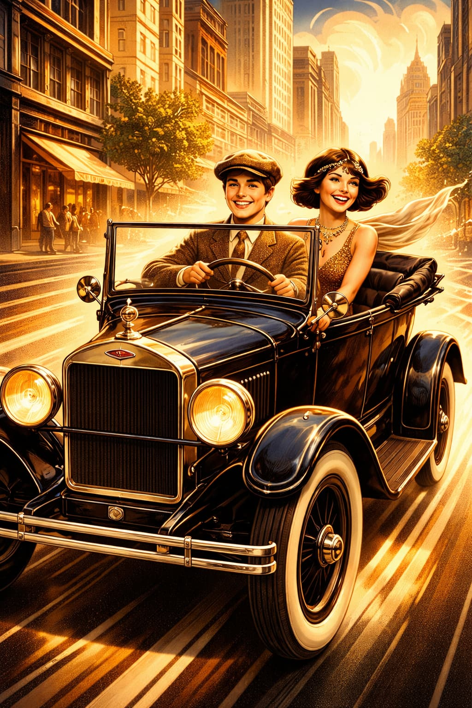
Ford Model T · Public Domain
The Flapper — A Revolution in Plain Sight
- Shorter skirts, bobbed hair, visible makeup, public smoking
- Dancing openly, claiming public space — on her own terms
- Women entering nightlife, restaurants, and city streets that had belonged to men
- For millions of young women, this was genuinely revolutionary — a break from everything their mothers had been allowed to be

Clara Bow · "The It Girl" · 1927 · Public Domain · Wikimedia Commons
The body was more free; the social structure was largely intact
⏸ Pause & Reflect
The flapper represented real new freedoms for women — but freedoms "within a structure that had not fundamentally changed." Is cultural freedom meaningful if structural inequality remains? Or is that the wrong question?
Section III
Radio dissolves geography and creates the first shared national experience
Radio: From Hobbyist to National Network
- 1920: radio was essentially a hobbyist technology
- 1927: NBC established — first national radio network
- 1927: CBS followed — from technical curiosity to a technology reaching tens of millions of households in less than a decade
- Radio created simultaneous shared experience at national scale — millions hearing exactly the same thing at exactly the same moment

Art Deco radio cabinet, sound waves radiating outward — the Jazz Age enters the American living room
What Radio Did — Structurally
- Before radio, cultural experience was always local — shaped by geography and the performers available in your specific place
- Radio dissolved geographic boundaries that had made American culture locally various
- Radio advertising entered the intimate space of the home through sound — a new form of commercial intimacy print could not match
- Amos 'n' Andy — two white performers voicing Black characters — reached 40 million weekly listeners: national reach, Black exclusion, racial stereotype as entertainment
Concept: Radio created a single national culture — and its racial politics were structural from the start
Amos 'n' Andy — "The Presidential Election" · Two white performers, 40 million listeners
⏸ Pause & Reflect
Radio created "cultural unity" by dissolving local variation — but was cultural unity also cultural colonization? Who set the standard that everyone else had to meet?
Section IV
How Chaplin and Keaton trained Americans to read emotion through movement
America Goes to the Movies
- Early 1920s: 35–50 million movie admissions per week — in a nation of 106 million
- By 1930: 80 million weekly — well over half the American population attending regularly
- Silent film's formal demand: communicate all emotion and narrative without spoken language
- Chaplin's physical vocabulary was extraordinarily precise — audiences developed, week by week, a new literacy of the body
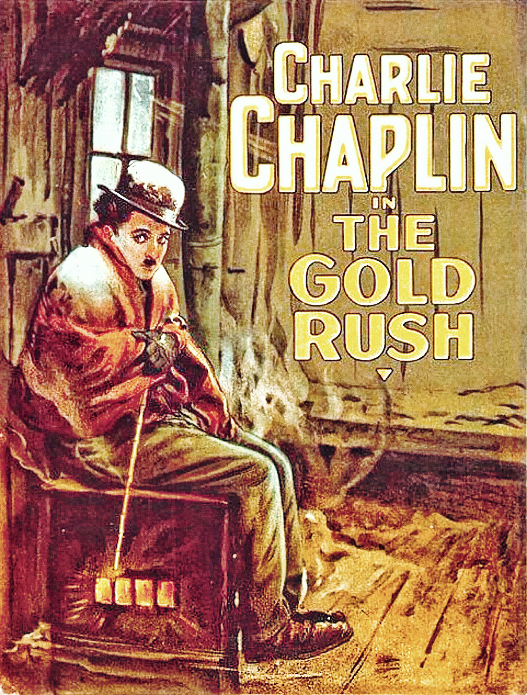
Charlie Chaplin · The Gold Rush · 1925 · Public Domain
Charlie Chaplin — The Body as Argument
How does he communicate without words? — Everything is in the body
The First National Celebrities
- Chaplin, Keaton, Pickford, Valentino — first figures recognized by millions who had never met them
- Celebrity culture as we understand it was created by silent film
- Valentino's appeal challenged norms of American masculinity — critics used language identical to jazz critics: foreign, feminine, excessive
- Millions of women were drawn to exactly the body that didn't follow the rules
Ladies of the Silent Era
- Mary Pickford — "America's Sweetheart" and co-founder of United Artists
- Lillian and Dorothy Gish — the first great dramatic actresses of the screen
- Theda Bara — Hollywood's first sex symbol and the original "vamp"
- Mabel Normand, Clara Bow, Louise Brooks — comedian, "It Girl," and icon of modern femininity
Women did not just appear on the screen — they defined what the screen could be
The Vamp — The Flapper's Dark Mirror
- The vamp was a predatory woman who used sexual power to destroy men — from "vampire"
- Created almost entirely by Hollywood: Theda Bara's A Fool There Was (1914) established the template
- Always coded as foreign — Italian, Eastern European, Arab, racially ambiguous — where the flapper was Anglo-American and marriageable
- The flapper was liberation made cute and manageable; the vamp was the same cultural anxiety made monstrous
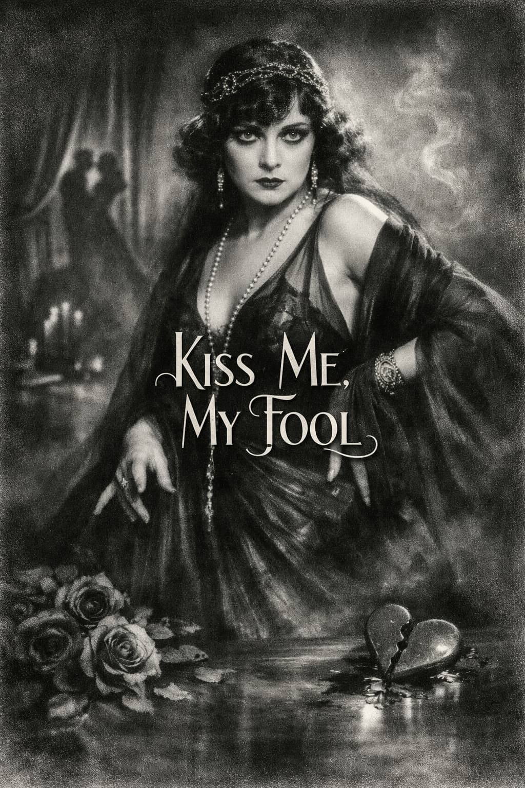
Same anxiety, opposite solution — the studio sold female danger as entertainment, then contained it
⏸ Pause & Reflect
Silent film "trained Americans to read emotion through movement — just as jazz trained them to feel rhythm." Both were technologies of bodily education. What does it tell us that the decade's critics attacked both jazz and Valentino using the same language of racial and gender anxiety?
- The critics were simply racist and sexist — their objections can be dismissed
- The same anxieties about bodily freedom structured resistance across different media
- Jazz and film were genuinely dangerous to American culture
- Critics were correct that foreign influence was changing American values
Al Jolson — "Mammy"
Al Jolson · "Mammy" · Blackface performance · The most popular entertainer in America
- The most popular entertainer in America — sold out theaters, sold millions of records
- His entire stage persona was built on blackface — a tradition of white performers caricaturing Black Americans dating to the 1830s minstrel show
- This was not an anomaly — it was the most commercially successful entertainment tradition in American history
- In 1927 he would carry this tradition directly into the new medium of sound film
Section V
1927: The Jazz Singer and the reorganization of the moving image
The Jazz Singer (1927)
- Synchronized sound experienced by contemporaries as a rupture — audiences' reactions were physically startling
- Stars built on physical expressiveness found careers in rapid collapse — the industry needed trained speaking voices
- The film's title claimed jazz's cultural authority — while featuring a white performer in racial disguise
- At the birth of sound cinema, American entertainment chose to inaugurate the new medium with the racial dynamics of the old one
Section VI
America becomes a single audience — and what that means
The Power of a Shared Audience
- Films shaped fashion — what stars wore became what audiences wanted to wear
- Films shaped behavior — courtship styles, speech patterns, attitudes toward authority
- Films shaped the imagination of the possible — showing audiences lives more glamorous and free than their own
- The great movie palaces — among the most spectacular architectural statements in American urban life
Cultural unification was also cultural colonization — local variation suppressed, Hollywood's values imposed on communities that might not have chosen them
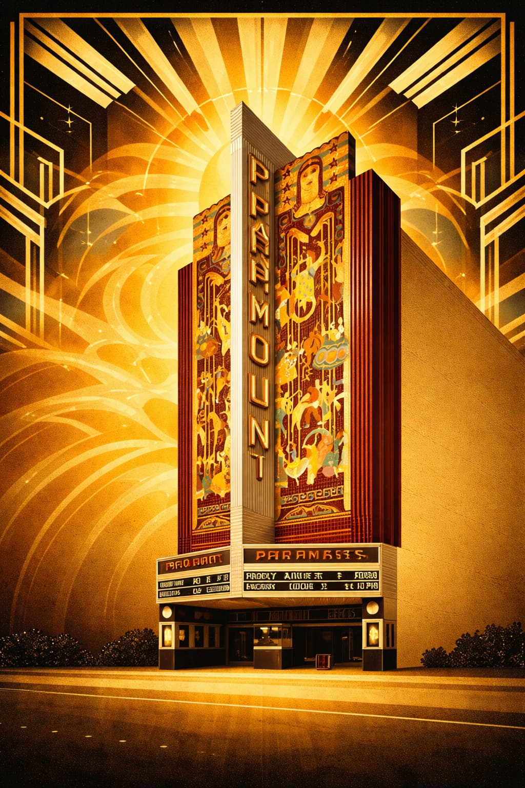
Paramount Theatre · Movie Palace of the Jazz Age · Public Domain
⏸ Pause & Reflect
Mass film culture created "cultural unity" — but also flattened local distinctiveness and imposed Hollywood's values nationwide. Is the tension between cultural unity and cultural diversity a problem we have resolved, or one we are still living inside?
- It is resolved — mass media creates a richer, more connected culture
- We live inside it still — social media recreates the same dynamic at greater scale
- Local culture survived — mass media had less homogenizing effect than feared
- The question assumes cultural diversity has value, which is debatable
Section VII
How photography shifted from posed dignity to captured motion — and what race had to do with it
From Posed Dignity to Captured Motion
- Subject posed, formally dressed
- Communicates stability and social standing
- Document addressed to posterity
- Photography as permanent social identity
- Stieglitz, Strand — catching the world in motion
- Blur, sharp angles, candid expression: expressive, not defective
- Documents of the present moment, not permanent identity
- Formally homologous to jazz: energy, improvisation, refusal of static dignity
The visual language of 1920s photography was built on foundations laid in the decade before — the works ahead show both the foundation and what it made possible
Alfred Stieglitz — The Modern Eye
- Central figure in establishing photography as serious art in America — his gallery 291 was the first American venue to exhibit Picasso and Matisse
- Pursued abstraction, emotional resonance, and formal composition — photography pursuing the concerns of modernist painting
- Insisted that the camera could see what the eye could not — and spent forty years proving it
- His photographs of Georgia O'Keeffe — hundreds of them, including nudes — helped define what a modern American artist looked like
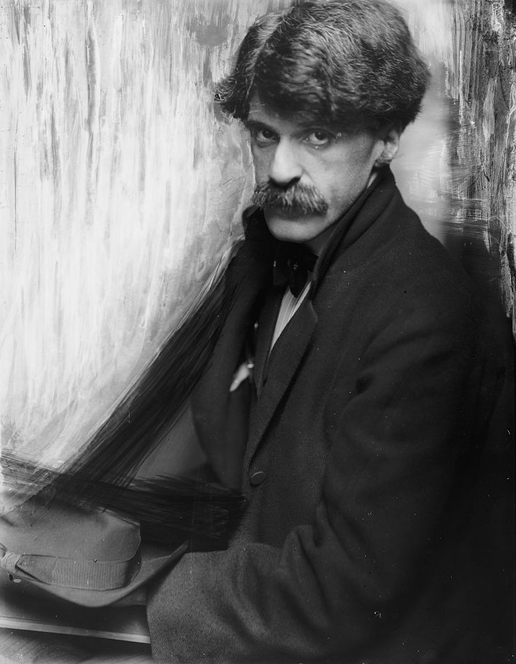
Alfred Stieglitz · Public Domain
Stieglitz — The Steerage (1907)

Alfred Stieglitz · The Steerage · 1907 · Public Domain
Stieglitz — Equivalent (1925)

Alfred Stieglitz · Equivalent · 1925 · Public Domain
Stieglitz — Georgia O'Keeffe (1918)
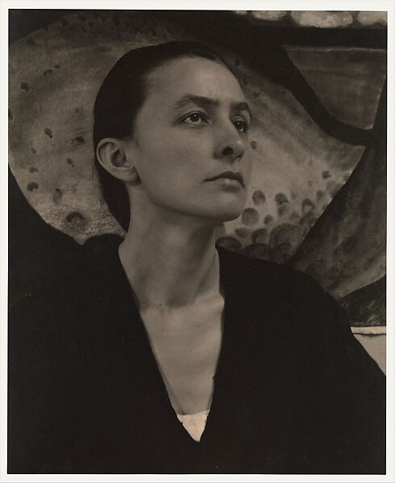
Alfred Stieglitz · Georgia O'Keeffe · 1918 · Public Domain
Paul Strand — The Geometry of the Modern City
- Stieglitz's most important protégé — Stieglitz devoted an entire issue of Camera Work to him in 1917, the journal's final issue
- Developed an aesthetic of sharp geometrical forms, radical close-cropping, and direct confrontation — broke decisively from soft-focus pictorialism
- Showed that the camera could be a weapon of social observation as well as aesthetic form
- Later made influential documentary films and photo books about working communities across three continents
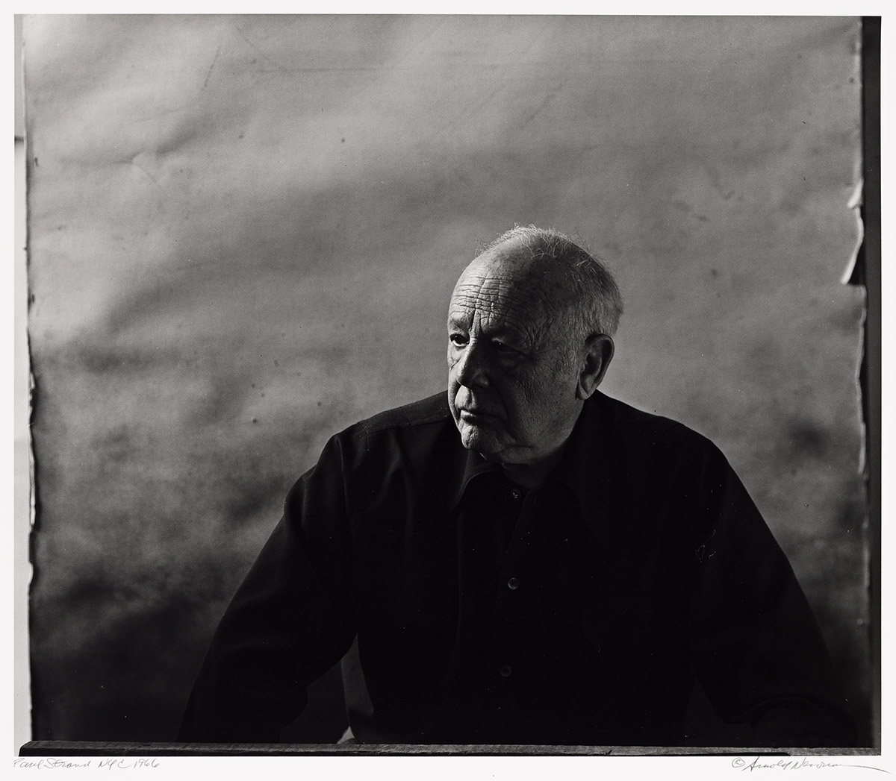
Paul Strand · Photograph by Arnold Newman · Public Domain
Strand — Wall Street (1915)
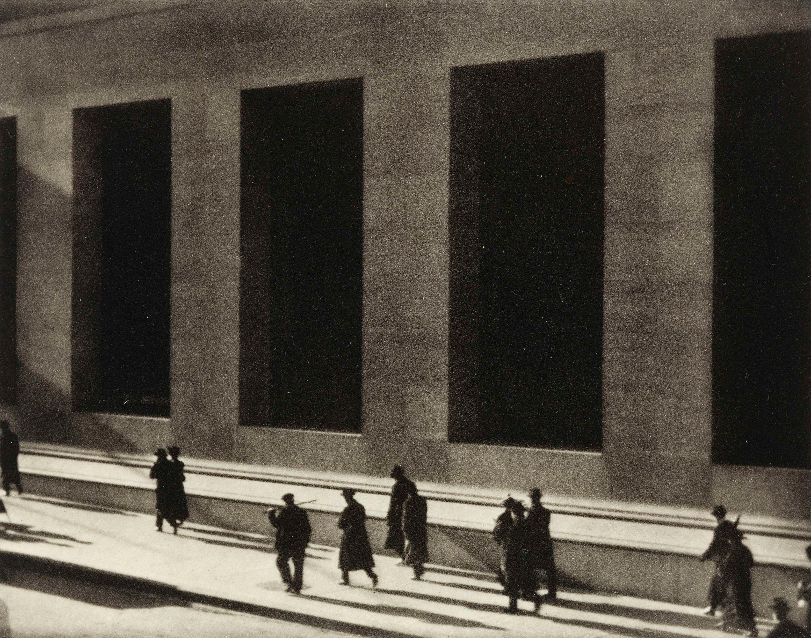
Paul Strand · Wall Street · 1915 · Public Domain
Strand — Blind Woman (1916)

Paul Strand · Blind Woman · 1916 · Public Domain
Strand — White Fence, Port Kent (1916)
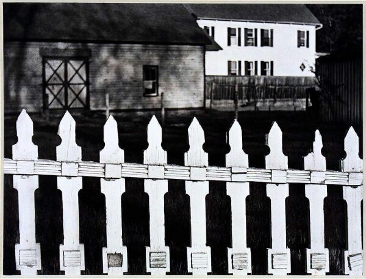
Paul Strand · White Fence, Port Kent · 1916 · Public Domain
Edward Steichen — Where Art Meets Commerce
- Stieglitz's great contemporary and co-founder of the Photo-Secession movement (1902) — then took a sharply different path
- By the mid-1920s shooting for Vanity Fair and Vogue — bringing modernist formal intelligence into mass-circulation magazines
- Proved that the modernist eye was not confined to galleries — it could sell magazines, shape fashion, and define celebrity
- Later curated The Family of Man (1955) — the most visited photography exhibition in history

Edward Steichen (1879–1973) · Public Domain
Steichen — Gloria Swanson (1924)
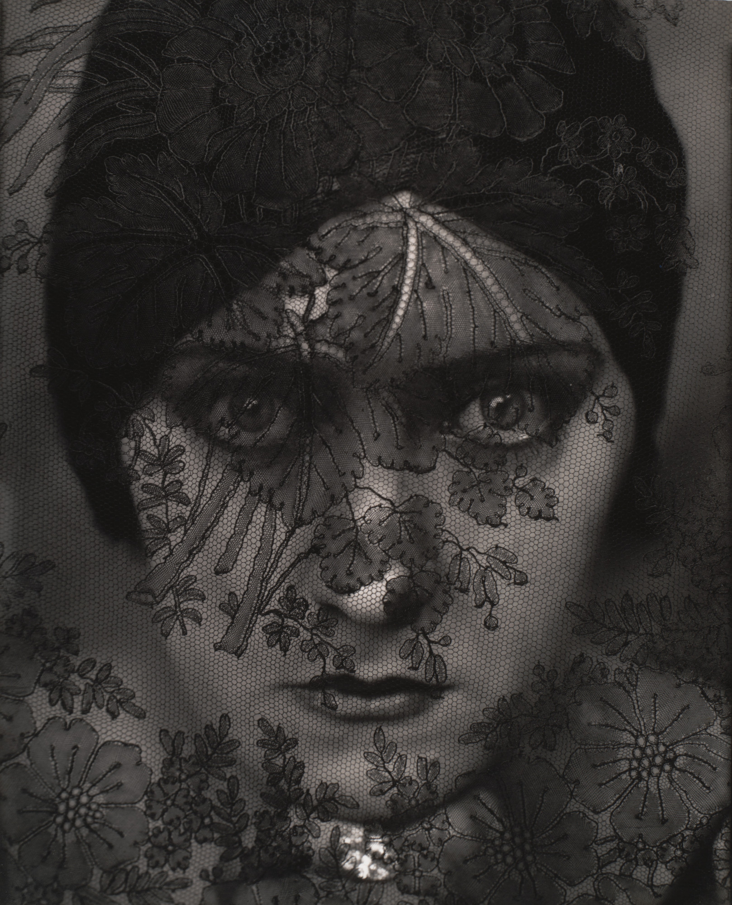
Edward Steichen · Gloria Swanson · 1924
Steichen — Greta Garbo (1928)
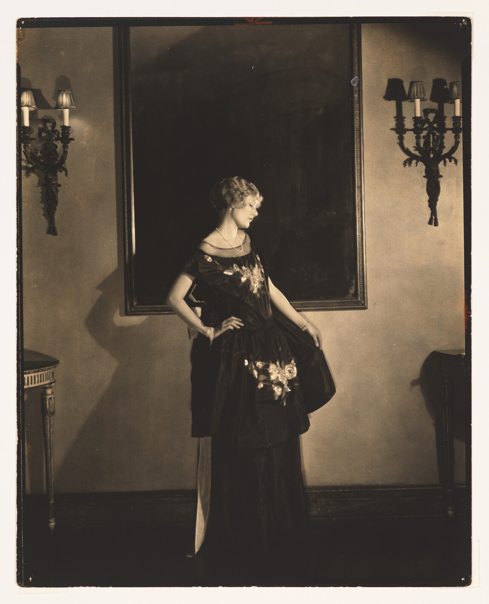
Edward Steichen · Greta Garbo · 1928
Steichen — Vogue Evening Gown (1925)
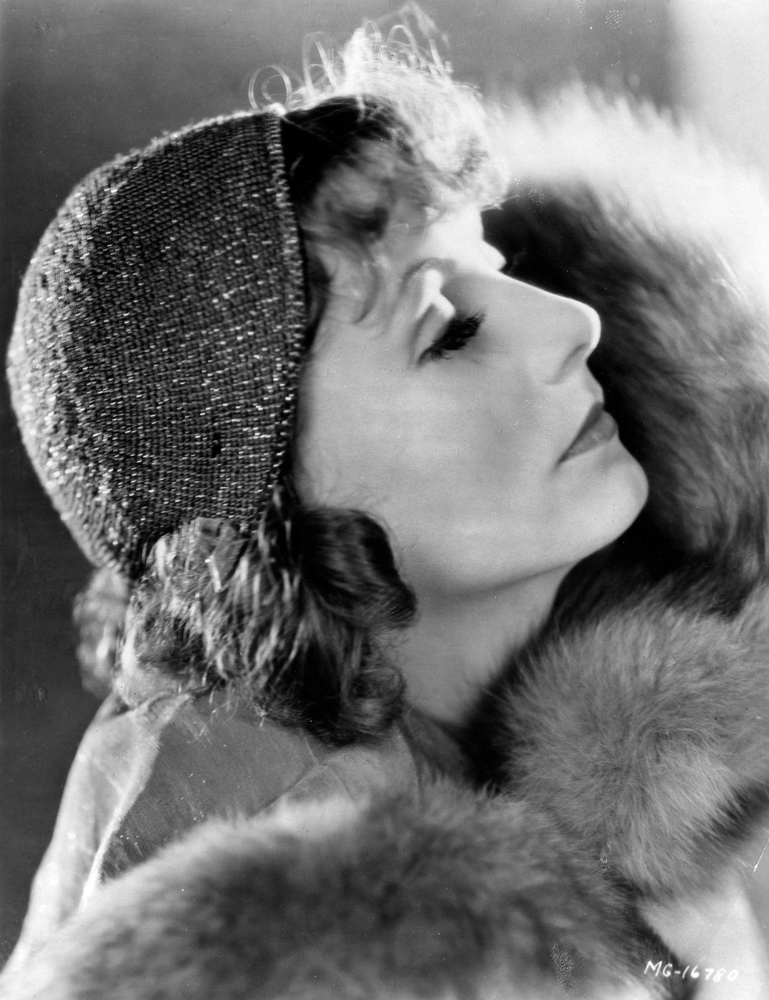
Edward Steichen · Vogue Evening Gown · 1925
Man Ray — Dada, Surrealism, and the Camera as Weapon
- American-born in Philadelphia, moved to Paris 1921 — became the photographer of the Dada and Surrealist movements
- Invented the Rayograph (1922) — objects placed directly on photographic paper, exposed to light, no camera required
- Used photography to challenge every assumption about what an image is, what it shows, and what it means
- Where Stieglitz asked "can photography be art?" Man Ray asked "can art destroy photography?"
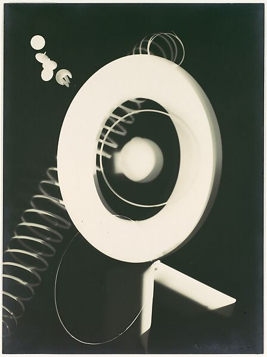
Man Ray · Rayograph · 1922 · Public Domain
Man Ray — Le Violon d'Ingres (1924)

Man Ray · Le Violon d'Ingres · 1924 · © Man Ray Trust
Man Ray — Solarized Portrait: Lee Miller (1929)

Man Ray · Solarized Portrait: Lee Miller · 1929 · © Man Ray Trust
James Van Der Zee — The Counter-Tradition
- Harlem-based photographer who documented Black urban life from the 1910s through the 1970s — an archive of extraordinary depth
- His subjects wore their finest clothes, occupied comfortable domestic spaces — presented as people with histories, aspirations, full social lives
- A deliberate counter-narrative to both mainstream white publications and the exoticizing imagery of the nightclub circuit
- Work was largely unknown outside Black communities until the 1969 Harlem on My Mind exhibition at the Met — he was then in his eighties

James Van Der Zee · Public Domain
Van Der Zee — Couple in Raccoon Coats (1932)
A young couple in elegant raccoon fur coats, posed in front of a Cadillac on a Harlem street. Dressed for success, comfortable, aspirational — photographed with the same dignity and formality as any white society portrait of the era.
This is not the Harlem white audiences were coming to see at the Cotton Club. This is Harlem documenting itself — prosperity, style, and pride on its own terms.
Van Der Zee — Harlem Portraits (1920s)
Studio portraits, street photographs, family groups, soldiers, athletes, musicians — Van Der Zee documented every dimension of Black middle-class Harlem life with consistent formal intelligence and unfailing dignity.
His archive is now recognized as one of the most important documentary records of African American life in the 20th century — preserved almost entirely because his community valued it, not because mainstream institutions did.
Van Der Zee — Marcus Garvey Parade (1924)
Marcus Garvey's UNIA parade through Harlem — thousands of marchers in uniform, flags flying, the street packed from curb to curb. Van Der Zee was the official photographer of the UNIA and documented its mass meetings and parades throughout the early 1920s.
The political Harlem that white audiences didn't see — organized, proud, and demanding recognition on terms the mainstream culture was not prepared to acknowledge.
⏸ Pause & Reflect
Van Der Zee's portraits circulated within Black communities rather than through white commercial channels. What does it mean for a community's historical record when its own self-representation doesn't enter the mainstream archive?
Section VIII
Hopper, O'Keeffe, and the painters who asked what all the noise was for
Edward Hopper — The Other Side of the Jazz Age
- Where Jazz Age culture was loud, communal, and celebratory — Hopper painted the other side
- The diner at midnight, the gas station on the empty highway, the hotel room window — loneliness mass culture produced alongside the spectacle it celebrated
- His question, painted over and over: what is all this noise for?
- His paintings feel contemporary because the tensions the 1920s introduced have never been resolved
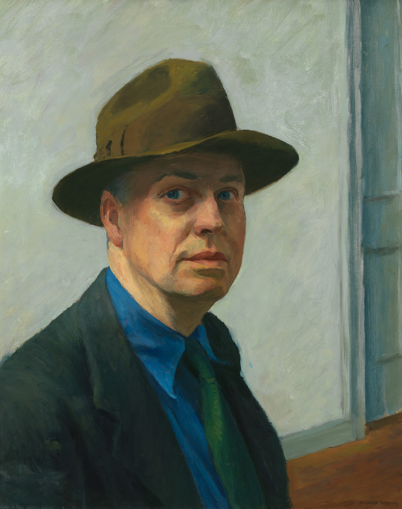
Edward Hopper · Self Portrait · Public Domain
Hopper — Nighthawks (1942)
Four people in a all-night diner — together but completely isolated from each other. No door visible. No way in or out. The city outside is empty.
Painted slightly after our period, but the painting Hopper spent the 1920s learning to make. The Jazz Age produced the loneliness; Hopper painted its portrait.
Hopper — Gas (1940)
A lone attendant at a rural gas station as darkness falls. The highway disappears into the trees. No customers. No community. Just a man, some pumps, and the road.
The automobile gave the 1920s its freedom — Hopper showed what freedom looked like when the destination turned out to be nowhere in particular.
Hopper — Automat (1927)
A woman sits alone at a table in an automat — one of the new self-service restaurants that were a symbol of modern urban life. She is dressed well. She does not look up. The windows behind her reflect the room's lights into infinite darkness.
Painted in 1927 — squarely in the Jazz Age. The flapper's world, seen from the inside at 2am.
Georgia O'Keeffe — Scale, Abstraction, and the Female Gaze
- Large-format flowers and New York cityscapes — scale and abstraction as a formal ambition equal to any male modernist
- Navigating gender politics from inside: constructing a public identity as a serious artist in a world that kept trying to reduce her work to biography
- Critics read her flower paintings as sexual — she insisted they were formal. Both were probably right. She refused to resolve the ambiguity.
- Partner of Stieglitz — professionally entangling and personally complex — she eventually left New York for New Mexico entirely
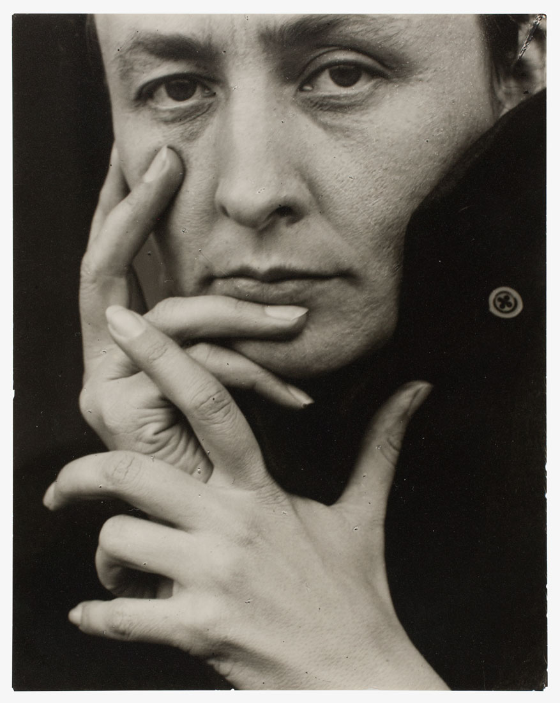
Georgia O'Keeffe · Photographed by Alfred Stieglitz · Public Domain
O'Keeffe — Black Iris (1926)
An iris painted at such extreme close range and scale that it becomes pure form — curves, gradations of purple and black, the center disappearing into darkness.
Critics immediately read it as erotic. O'Keeffe denied the interpretation her entire life. The argument itself — who controls the meaning of an image — is the lecture's argument about photography applied to painting.
O'Keeffe — Radiator Building — Night, New York (1927)
The American Radiator Building at night — its dark Gothic silhouette lit from within, red smoke rising from the roof, the city as a modernist cathedral of industry and electricity.
O'Keeffe loved New York and painted it with the same formal intensity she brought to flowers. The city and the flower were the same problem: how to see something familiar as if for the first time.
O'Keeffe — Jimson Weed / White Flower No. 1 (1932)
Four white trumpet-shaped flowers fill the entire canvas — no sky, no ground, no context. Just the flower, at a scale that makes the viewer feel small.
Sold at Sotheby's in 2014 for $44.4 million — the highest price ever paid for a painting by a female artist at auction. The market finally caught up with what Stieglitz recognized in 1916.
Synthesis
What the Jazz Age Actually Did
- Jazz changed how Americans moved — new relationship to the body, improvisation over obedience
- Technology changed how Americans saw — photography, film, radio created new shared literacies of sensation
- Mass media changed how Americans wanted to live — celebrity, consumer aspiration, and modern style saturated daily life
- To young Americans: this felt like freedom — and the freedom was real
Freedom Within a Structure That Hadn't Changed
- Racial hierarchy remained — jazz crossed racial boundaries; equality did not
- Gender inequality persisted — flapper's body was freer; her wages and legal rights were not
- Consumer freedom created new forms of dependency and manipulation
Next: The Harlem Renaissance — what Black artists made of this moment on their own terms
An approach to historical study that emerged in the 1960s and 1970s, associated with historians like E.P. Thompson, Lawrence Levine, and later scholars of everyday life. Rather than focusing exclusively on political events, laws, and the decisions of powerful individuals, social and cultural historians ask how ordinary people experienced the past — what they ate, how they moved, what they heard, what they feared, what they desired. Cultural historians go further, examining how meaning was made and circulated through art, music, performance, photography, and popular entertainment. The 1920s are particularly well-suited to this approach because so much of what was genuinely new about the decade was experienced first as sensation — as sound, image, speed, and bodily feeling — before it was understood as politics or ideology.